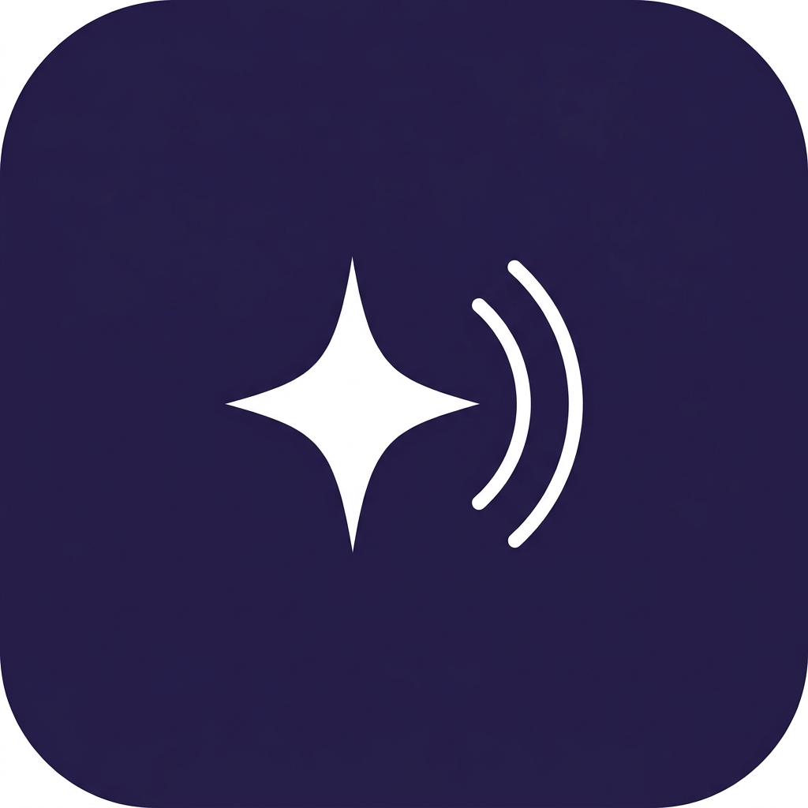

Голосовая диктовка для Mac. Нажал клавишу — надиктовал — текст вставился.
Скачать для MacApple Silicon (M1 и новее) · macOS 14+ · бесплатно
Установка: открой .dmg → перетащи в «Программы» → запусти. При первом запуске: Системные настройки → Конфиденциальность и безопасность → «Всё равно открыть». Затем включи Nova Dictate в «Универсальный доступ» и разреши микрофон.